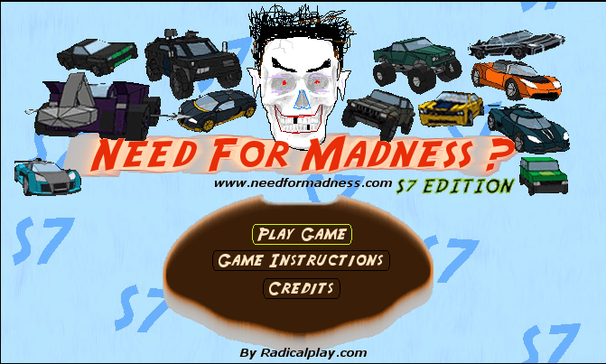

Hello and welcome to my webpage. This webpage is about me and projects I've been invovled with.
Need For Madness is a racing / wasting game developed by Omar Waly. I made custom versions with custom tracks, cars, images, sound, and music.

Main menu of NFM2 S7 - S7 Edition.
- Original
- NFM2 S7 v1 - Your Journey on S7
- NFM2 S7 v2 - S7 Edition
- NFM2 S7 v3 - New Dawn
- Revisions
- NFM2 Mighty Stories v1
- NFM S7 - Retro Reverence
- NFM Mirror